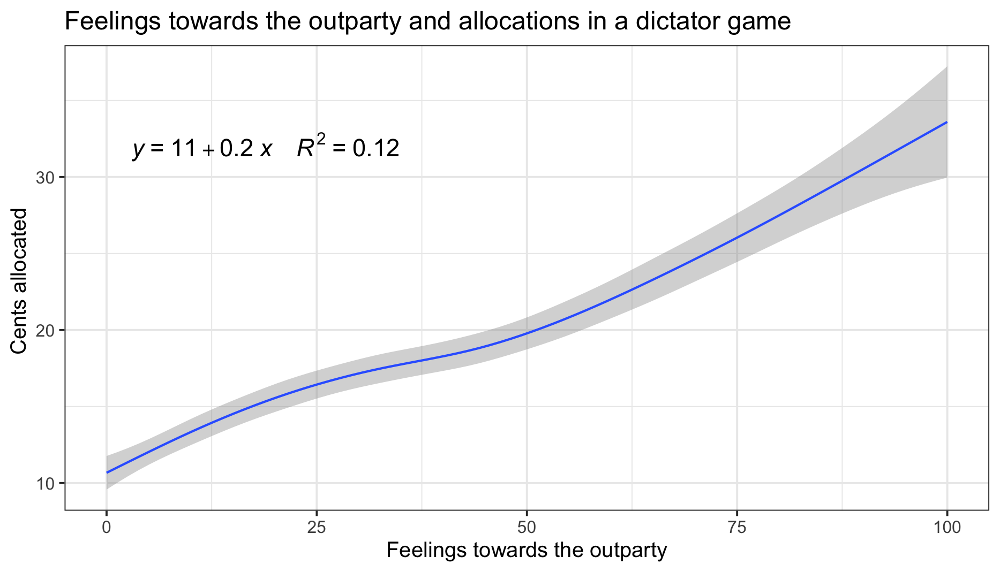
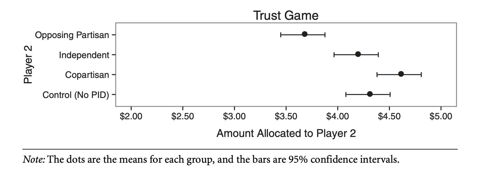
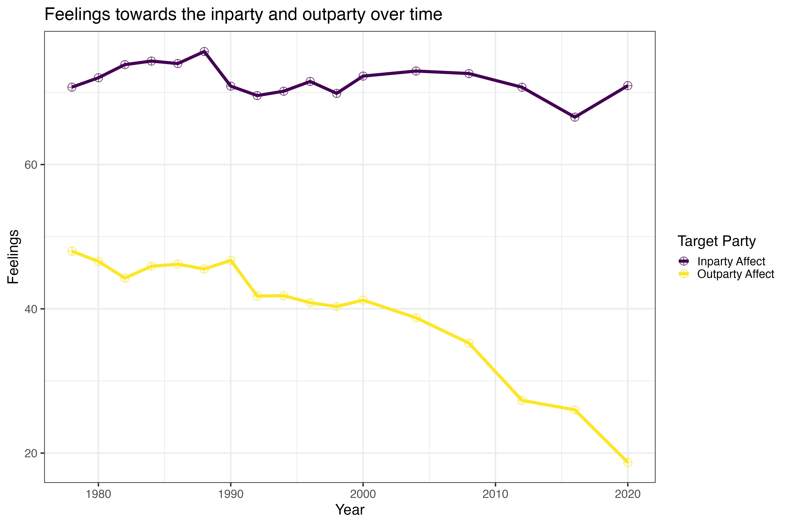
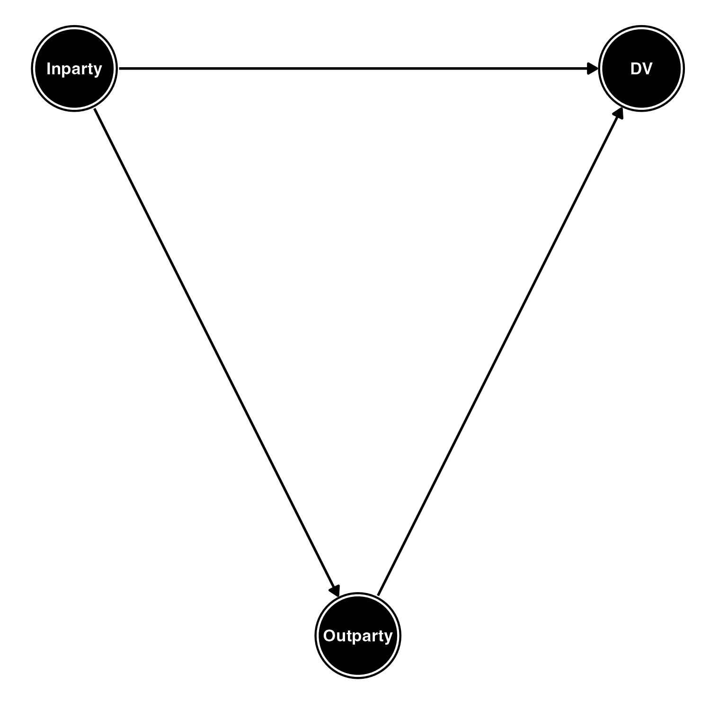
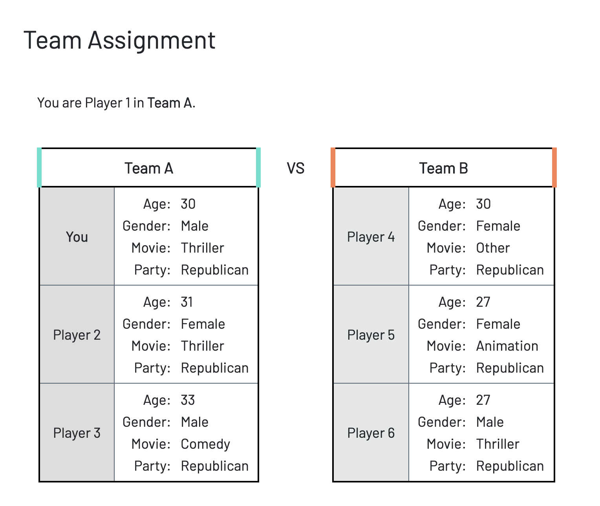
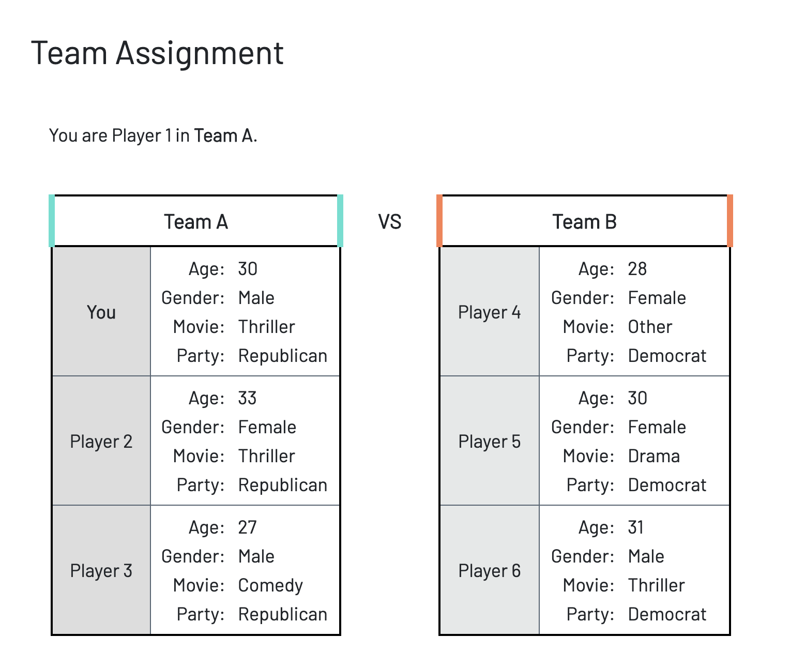
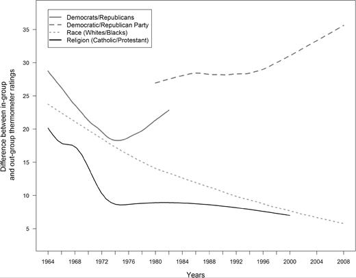
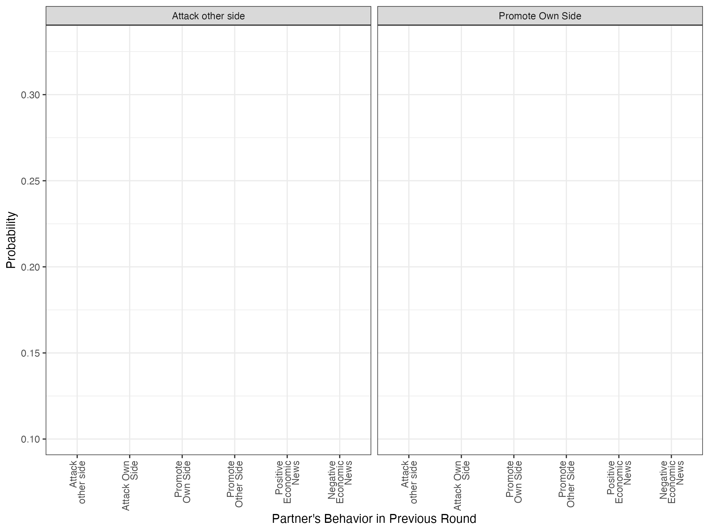
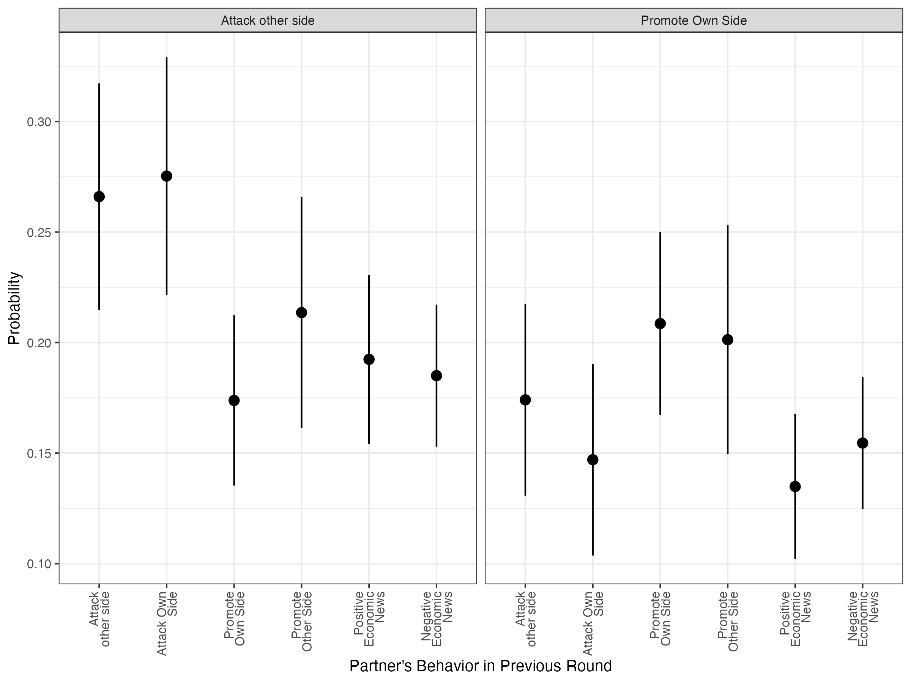
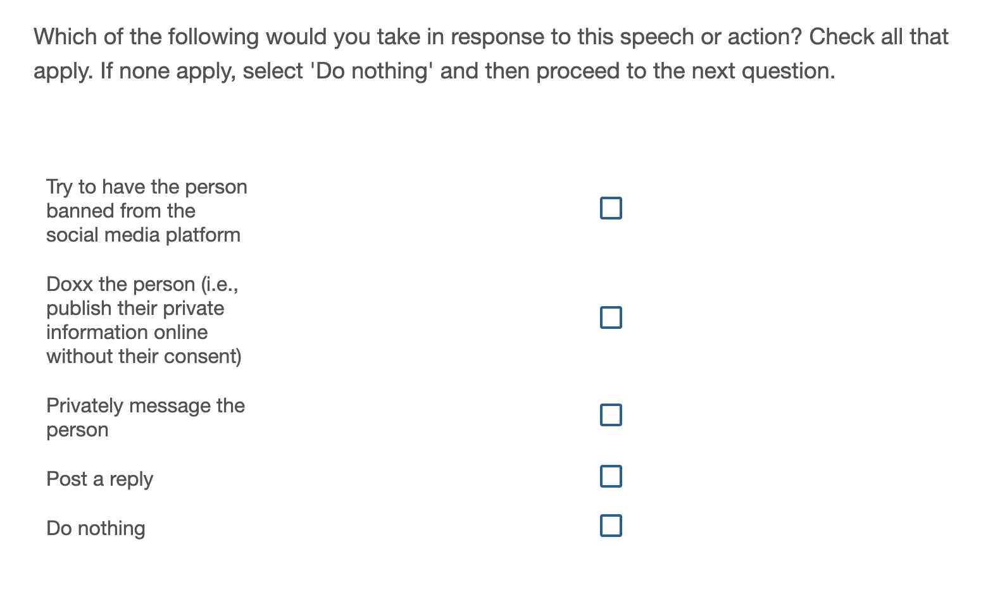

What is partisan prejudice?
Three questions about partisan prejudice:
- What causes partisan prejudice?
- Does partisan prejudice matter?
- What do we mean by partisan prejudice?
Partisan prejudice is whatever it is that we measure
- Feeling thermometers (and other measures) on surveys
- Bias in vignettes and behavioral games
- Outrage on social media
But what are we measuring?
Prejudice as cheap talk
Answering a question on a survey is basically costless—it is cheap talk. Why not just respond in a way that expresses some inner consideration, rather than a true belief? “Yea for my team, boo for yours.” (Fiorina, 2024)
Prejudice as cheap talk
- People are willing to lose money to avoid working with someone from the other side (McConnell et al, 2018)
- Saying crazy stuff publicly is not cheap talk
- Partisan bias in behavioral games is correlated with feeling thermomer scores
 (Data from Voelkel et al, 2023)
Prejudice as outparty loathing
What is corroding American politics is, specifically, negative partisanship: Although most liberals feel conflicted about the Democratic Party, they really hate the Republican Party. And even though most conservatives feel conflicted about the Republican Party, they really hate the Democratic Party. America’s political divisions are driven by hatred of an out-group rather than love of the in-group. (Mounk, 2019)
Out-party hate has emerged as a stronger force than in-party love (Finkel et al, 2020)
Parties hang together mainly out of sheer hatred of the other team, rather than a shared sense of purpose (Abramowitz and Webster, 2017)
Outgroup feelings are a stronger predictor than ingroup feelings
- Abramowitz and Webster (2016)
- Iyengar and Krupenkin (2018)
- Rathje et al (2021)
- Yu et al (2025)

…ratings of the opposing party had a significant effect on party loyalty … rating of one’s own party had no discernible effect on vote choice in this analysis.
Behavioral games show more outgroup bias than ingroup favoritism
-Iyengar and Westwood (2015)
Outparty feelings have dropped, inparty feelings have not
Public expressions of prejudice is increasingly prevalent and rewarded


Revisiting claims of outgroup hate
- Horse race comparisons of coefficients with cross-sectional data can’t tell us about which coefficient is more important.
- Behavioral measures of hate are not greater than behavioral measures of love
- People may be expressing outrage not because they feel it, because they believe it is normative or that it will help them gain status or approval from others
Revisiting claims of outgroup hate
- Horse race comparisons of coefficients with cross-sectional data can’t tell us about which coefficient is more important.
- Behavioral measures of hate are not greater than behavioral measures of love
- People may be expressing outrage not because they feel it, because they believe it is normative or that it will help them gain status or approval from others
The psychological primacy of the ingroup
- Athough we could not perceive our own ingroups excepting as they contrast to outgroups, still the ingroups are psychologically primary. We live in them, by them, and sometimes, for them. Hostility toward outgroups helps strengthen our sense of belonging, but it is not required (Allport, 1954, pp. 40-41).
The Affect DAG

- Coefficients in cross-sectional regressions don’t teach us much total effects of one variable or another
- Variable importance metrics show no real differences between outgroup and ingroup feelings in predicting outcomes
Revisiting claims of outgroup hate
- Horse race comparisons of coefficients with cross-sectional data can’t tell us about which coefficient is more important.
- Behavioral measures of hate are not greater than behavioral measures of love
- People may be expressing outrage not because they feel it, because they believe it is normative or that it will help them gain status or approval from others
How do we differentiate between ingroup love and outgroup hate?
Beavioral experiments in the literature are zero-sum
Intergroup prisoner’s dilemma maximizing difference game (Halevy, Bornstein, Sagiv 2008; Halevy, Weisel, Bornstein 2012)
Lee et al, 2022, N=500 from Bovitz Forthright Panel



Empirical expectations
If people are driven by animosity rather than loyalty, we would expect that competitive fund contributions > group fund contributions
Summary: Intergroup prisoner’s dilemma maximizing difference game
- Outgroup hostility does not swamp ingroup love
- However, unlike other social identities, ingroup and outgroup feelings were comparable.
- Ingroup affect (not outgroup affect) was correlated with outgroup discrimination (See Appendix)
Revisiting claims of outgroup hate
- Horse race comparisons of coefficients with cross-sectional data can’t tell us about which coefficient is more important.
- Behavioral measures of hate are not greater than behavioral measures of love
- People may be expressing outrage not because they feel it, because they believe it is normative or that it will help them gain status or approval from others
Why did outparty feelings drop?
- Genuine drop in feelings or
- It is that it is now acceptable (even encouraged) to say that you dislike the other side, but not other groups

Hating the other party is potentially socially desirable
- People report that they would report hating the other side if the goal was to impress members of the inparty (Connors, 2023)
- But priming privacy had no effect.
- No evidence of partisan bias in telephone interviews in the 2006 ANES pilot (Healy and Malhotra, 2014)
Are expressions of prejudice contextually determined?
- However, 2012 ANES face-to-face interview asked for interviewer pids.
- We can estimate the difference in the survey responses for respondents interviewed by inparty interviewers compared to those interviewed by outparty interviewers
Data and Methods
- Respondent N =~1500 , Interviewer N=114
- DVs: R’s asked their feelings towards the parties and the presidential candidates (0-100) and how much they dislike or like each of the parties (0-10)
- Matched PID dummy: if the interviewer and respondent shared a party identity 1, otherwise 0
- Matched Race dummy and Matched Gender dummy
- Regressed DVs on Matched PID and Interviewer Fixed Effects, SEs Clustered by IWR
| Out Party FT | In Party FT | Out Cand | In Cand | Out Like | In Like | |
|---|---|---|---|---|---|---|
| Matched PID | -0.03* | 0.02 | -0.05* | 0.03 | -0.06*** | 0.06** |
| (0.01) | (0.02) | (0.02) | (0.02) | (0.02) | (0.02) | |
| Matched Gender | -0.02+ | 0.02* | -0.04** | 0.02 | -0.01 | 0.02* |
| (0.01) | (0.01) | (0.01) | (0.01) | (0.01) | (0.01) | |
| Matched Race | -0.05** | 0.00 | -0.05* | -0.02 | -0.02 | -0.03 |
| (0.02) | (0.02) | (0.02) | (0.02) | (0.02) | (0.02) | |
| Num.Obs. | 1507 | 1507 | 1503 | 1517 | 1371 | 1373 |
| FE: IWR ID | X | X | X | X | X | X |
|
||||||
Summary: Interviewer Effects
- Sharing a party identity with an interviewer increased expressions of partisan animosity
- The effect was not explained by matching on other characteristics
(Rathje et al, 2021)
But posting outgroup animosity might be an ingroup loyalty signal and less of a genuine expression of animosity than a way to signal
The Information Exchange Study
With Shengchun Huang
1501 participants were recruited from MTurk (CloudResearch approved participants) and randomly paired with another participant.
Half of respondents were randomly assigned to also see demographic information, including the PID of their partner.
The Information Exchange Study
Each participant saw 6 randomly news stories and asked to share one with their partner, who went through the same process.
They rated the stories, and then repeated the process two more times.
Afterwards were asked to rate how trustworthy their partner was, to guess their partner’s identity, and ask if they wanted to share part of their bonus with them.
Stimuli
| Categories | Examples (when the sender is a Republican) |
|---|---|
| Attack other side | The Justice Department opened a probe into Democratic Sen. Tammy Baldwin for the possible insider trading of stock sales. |
| Promote own side | Republican Gov. Kay Ivey gave $1.9 million grant from Alabama’s Coronavirus Relief Fund to help veterans with post-traumatic stress disorder who got affected by COVID-19. |
| Negative econ news | Nearly 4 million Americans have been out of work for at least six months due to the coronavirus pandemic. |
Negativity begets negativity
Negativity begets negativity
Summary: The Information Exchange Study
- Spreading negative information depends on the perceived audience
- Spreading negative information depends on social norms
The piling on study
With Chloe Ahn and Matt Levendusky (2024)
Rs shown a potentially offensive statement and asked if they would engage in some sort of “cancelling behavior”
Then randomized question order:
Report if they would engage in some sort of “cancelling” behavior
Report whether or not people in their party would approve of each of the cancelling behaviors


Summary: The Piling on Study
- Priming people to consider group norms led to more cancelling behavior
Revisiting claims of outgroup hate
- Horse race comparisons of coefficients with cross-sectional data can’t tell us about which coefficient is more important.
- Behavioral measures of hate are not greater than behavioral measures of love
- People may be expressing outrage not because they feel it, because they believe it is normative or that it will help them gain status or approval from others
Animosity and approval
- In the information exchange experiment:
- people were more likely to correctly identify the partisanship of those who shared more negative info
- people were more likely to allocate part of their bonus to those who shared more negative info about the other side and say they trusted them more
- In the piling on study:
- people were more likely to identify, express affection, and say that other in party members would approve of those those who piled on
Recap
- Partisan prejudice is probably not just cheap talk
- It’s not clear that out-party hate has emerged as a stronger force than in-party love
- Expressions of animosity are contextually determined and based on perceived social norms
Implications (1)
- Inparty feelings may be more important than outparty feelings in predicting downstream behavior.
- Panel data showing that within person changes in inparty feelings are more predictive of support for anti-democratic actions than are changes in outparty feelings
- Inparty misperception corrections are more effective than outparty misperception corrections in reducing affective polarization (Appendix in Dias et al, 2024)
Implications (2)
- Animosity still matters in shaping what people think think people in their group believe and in shaping the tenor of public sphere
- However, there is widespread pluralistic ignorance on the acceptability of animosity–interventions could aim at altering perceptions of ingroup norms
Recap
- Partisan prejudice is probably not just cheap talk
- It’s not clear that out-party hate has emerged as a stronger force than in-party love
- Expressions of animosity are contextually determined and based on perceived social norms